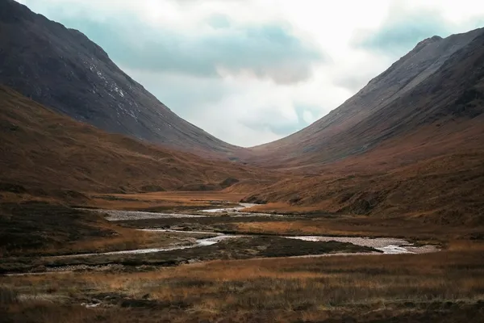

Highlands: Scotch malt whisky

Photo: Geo Chierchia on Unsplash
Scotland's largest whisky region, stretching from Perthshire to the far north, with a wide range of styles.
How it's made
Same Scotch rules: at least three years in oak in Scotland. Styles range from light and floral in the north to richer, fuller malts inland.
Malted barley, mostly unpeated or lightly peated, is mashed, fermented and distilled twice in copper pot stills. Still shapes vary widely, from Glenmorangie's very tall necks, which give a light spirit, to squat stills that make a heavier one.
History
The Highland Line, drawn for tax purposes by the Wash Act of 1784, first split Scotch into Highland and Lowland whisky. The Highlands are the largest whisky region and many distilleries date from the 1800s, after licensing became affordable in 1823.
Ageing and label terms
At least 3 years in oak in Scotland. Ex-bourbon and sherry casks are the base, with many wine, port and other cask finishes; age statements refer to the youngest whisky.
Styles
So big that there is no single style: floral and fruity in the north (Glenmorangie), waxy (Clynelish), rich and sherried (Dalmore, GlenDronach), and some lightly smoky malts in the east (Ardmore).
Rules and protected names
Highland is a protected Scotch whisky region under the Scotch Whisky Regulations 2009; Speyside sits within it geographically but is its own region. Minimum 40% ABV.
How to serve and classic cocktails
Lighter malts work neat or in a highball; richer sherried ones are best neat. Classic cocktails: Rob Roy, Blood and Sand and the Rusty Nail.
With food
Venison, roast game, haggis, aged Cheddar and fruit cake.
Good to know
The islands (Skye, Orkney, Mull, Jura and others) are legally part of the Highland region, though they are often listed separately as Island whiskies.
Producers
- Glenmorangie
- The Dalmore
- Oban
- Glengoyne
- Clynelish
Bottles to try
Glenmorangie The Original 10 Years Old
Soft and floral: citrus, peach, vanilla and honey.
Serve: Neat or with soda
The Dalmore 12 Year Old
Orange marmalade, chocolate, dried fruit and warm spice.
Strength: 40% · Age and cask: 12 years, ex-bourbon then oloroso sherry casks
From a distillery on the Cromarty Firth founded in 1839. Part of the spirit finishes in casks that held 30-year-old Matusalem oloroso, giving its trademark orange and cocoa notes; the stag on the bottle is the clan crest of the Mackenzies, long-time owners.
Serve: Neat
Oban 14 Year Old
Orange peel, honey, sea salt and a light wisp of smoke.
Strength: 43% · Age and cask: 14 years in oak casks
Oban is one of the smallest distilleries in Scotland, with just two pot stills, and the harbour town on the west coast grew up around it after 1794. It sits between the Highlands and the Islands in both location and style.
Serve: Neat or with a little water
Clynelish 14 Year Old
Waxy and coastal: honey, beeswax, orange zest, sea spray and a little pepper.
Strength: 46% · Age and cask: 14 years, oak casks
Made in Brora on the far north-east coast of the Highlands. Its waxy, mouth-coating texture is famous among whisky lovers, and the distillery is a key part of Johnnie Walker blends.
Serve: Neat
The GlenDronach 12 Year Old Original
Christmas cake in a glass: sultanas, figs, cocoa, sweet sherry and soft spice.
Strength: 43% · Age and cask: 12 years, Pedro Ximénez and Oloroso sherry casks
Founded in 1826 in the Aberdeenshire countryside, GlenDronach is one of the best-known sherry-cask specialists in Scotland. The 12 is matured in a mix of sweet PX and drier Oloroso casks.
Serve: Neat, or with a drop of water
Glenmorangie The Lasanta 12 Year Old
Raisin, toffee, orange peel and warm spice over Glenmorangie's soft vanilla fruit.
Strength: 43% · Age and cask: 12 years, ex-bourbon casks then extra time in Oloroso and Pedro Ximénez sherry casks
Lasanta starts in the same bourbon casks as The Original and is then moved into sherry casks for a richer, darker finish. The spirit comes from Glenmorangie's very tall stills, which keep it light and delicate.
Serve: Neat, or with a few drops of water after dinner
Old Pulteney 12 Year Old
Light and coastal: honey, vanilla, citrus, a little brine and a dry finish.
Strength: 40% · Age and cask: 12 years, ex-bourbon casks
Founded in 1826 in Wick, a herring port in Caithness on the far north-east coast. The wash still has an unusual flat top, a shape said to date from when it was too tall for the stillhouse.
Serve: Neat, or with seafood
Aberfeldy 12 Year Old
Honeyed and smooth: heather honey, vanilla, ripe pear, orange peel and a soft malty finish.
Strength: 40% · Age and cask: 12 years, mainly American oak casks
Built by John Dewar & Sons at the end of the 1890s on the banks of the River Tay in Perthshire. Its malt is the heart of Dewar's blends, and the honeyed style is the house signature.
Serve: Neat or with a splash of water
Glengoyne 10 Year Old
Fresh and fruity: green apple, toffee, almonds and a light touch of sherry spice.
Strength: 40% · Age and cask: 10 years, mix of American and European oak, including sherry-seasoned casks
Glengoyne dries its barley with warm air instead of peat smoke, so there is no smokiness at all. The stills sit just north of the Highland Line, a short drive from Glasgow, and the spirit runs through them very slowly.
Serve: Neat or on ice
Glenmorangie The Quinta Ruban 14 Year Old
Dark chocolate and mint, orange, walnut and red berries over a creamy malt base.
Strength: 46% · Age and cask: 14 years: about 10 in ex-bourbon casks, then a finish in ruby port pipes
After its first decade in American oak the whisky is moved into port pipes from Portugal's Douro for several more years, which adds colour and red-fruit richness. It is bottled without chill filtration.
Serve: Neat, or with dark chocolate
Dalwhinnie 15 Year Old
Gentle and sweet: heather honey, vanilla, citrus and a hint of soft smoke.
Strength: 43% · Age and cask: 15 years, oak casks
Dalwhinnie sits high in the Cairngorms and is one of the highest and coldest distilleries in Scotland. Outdoor worm tubs cool the spirit, and it is the Highland choice in Diageo's Classic Malts.
Serve: Neat, or try it chilled
Edradour 10 Year Old
Rich and creamy: sherry, dried fruit, honey, almond and a touch of spice.
Strength: 40% · Age and cask: 10 years, ex-sherry and ex-bourbon casks
A tiny farm-style distillery near Pitlochry founded in 1825, long known as one of the smallest in Scotland. It still uses an open Morton's refrigerator to cool its wort, one of the last of its kind.
Serve: Neat, after dinner
More whisky regions
Explore all spirits in the interactive guide
The Wine Reference newsletter
New wines, stories and career guides, one email a week at most.
Over 18s only. Unsubscribe any time with one click. Your email is stored securely by Kit and never shared.
Support The Wine Reference
This guide is free, with no paywall. If it helped you choose a bottle, you can buy me a glass and keep it growing.
🍷 Buy me a glass